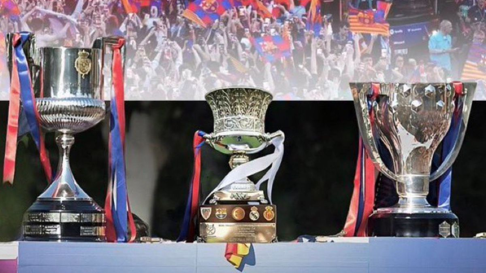
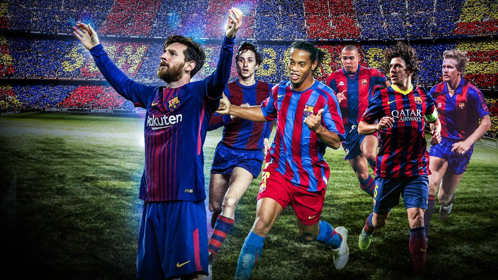
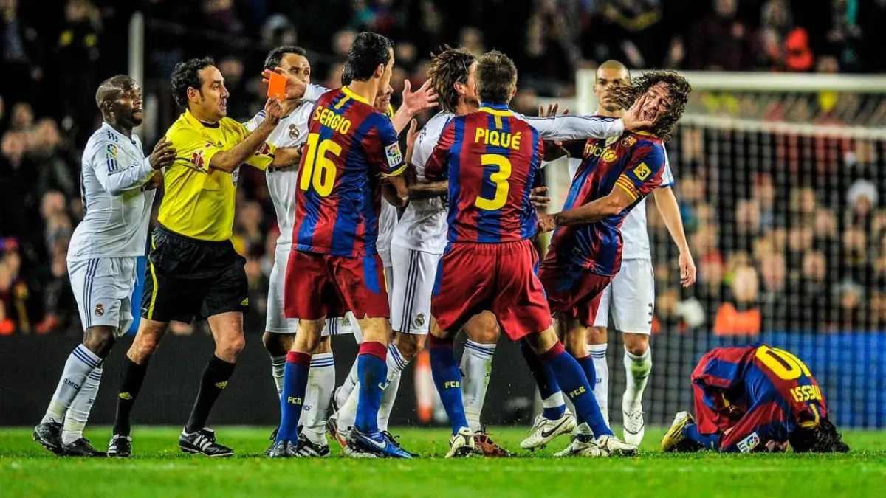

FC Barcelona
Der FC Barcelona wurde am 29. November 1899 vom Schweizer Hans Gamper gegründet.
Der Verein entwickelte sich zu einer Weltmarke und ist eng mit der katalanischen Identität verbunden.
Titel des FC Barcelona

Der FC Barcelona gehört zu den erfolgreichsten Vereinen der Welt.
Zu den Erfolgen zählen zahlreiche Meisterschaften, Pokalsiege und Champions-League-Titel.
Legenden des FC Barcelona

Carles Puyol führte Barcelona zum ersten Triple.
Xavi hält den Rekord für internationale Einsätze.
Lionel Messi gewann als einziger Spieler alle großen individuellen Titel in einer Saison.
El Clásico

Der El Clásico ist das bekannteste Duell Spaniens.
Die Rivalität begann 1902 und prägt den spanischen Fußball bis heute.
Die letzten fünf El Clásicos
| Sieg | Unentschieden | Niederlage |
|---|---|---|
| Barcelona 3-2 | ||
| Real Madrid 2-1 | ||
| Barcelona 4-3 | ||
| Barcelona 5-2 | ||
| Barcelona 4-0 |
LaLiga Tabelle (Live)
| Platz | Team | Spiele | Punkte | Tore | Diff |
|---|